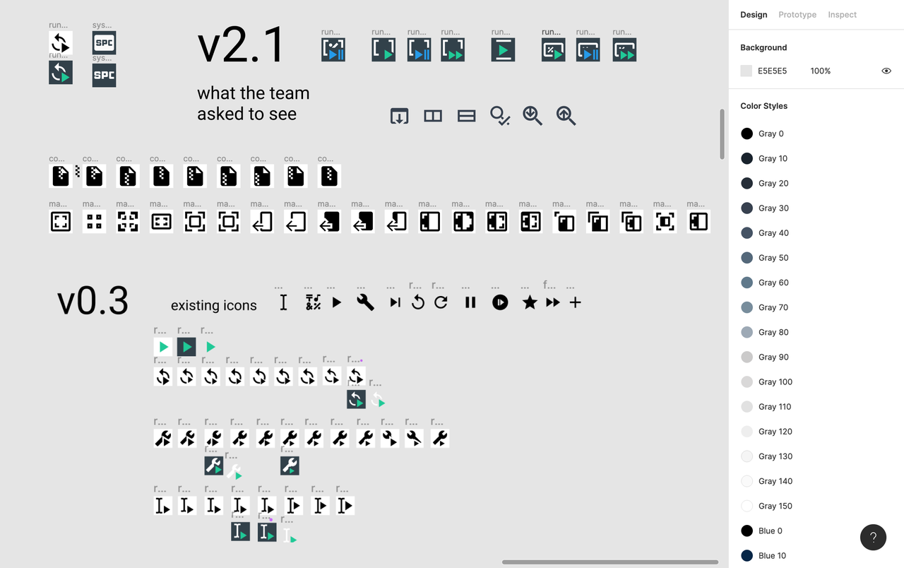
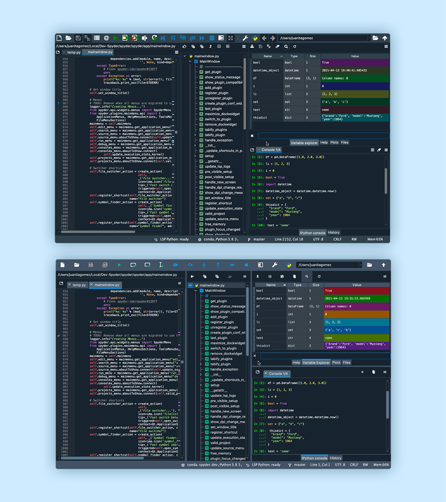
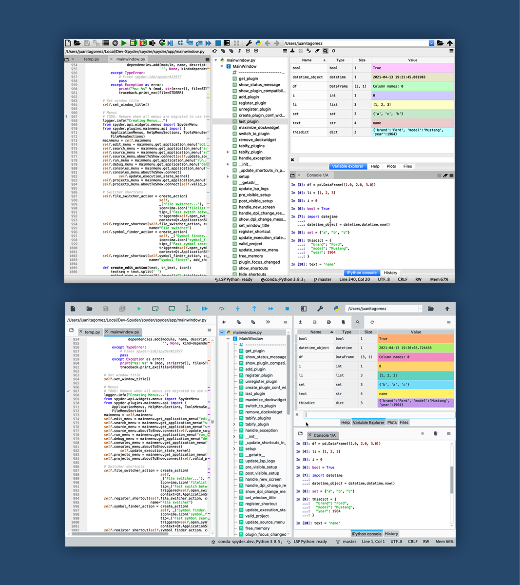

Spot the differences: what is new in Spyder 5?

In case you missed it, Spyder 5 was released at the beginning of April! This blog post is a conversation attempting to document the long and complex process of improving Spyder's UI with this release. Portions lead by Juanita Gomez are marked as Juanita, and those lead by Isabela Presedo-Floyd are marked as Isabela.
What did we do?
[Juanita] Spyder was created more than 10 years ago and it has had the contributions of a great number of developers who have written code, proposed ideas, opened issues and tested PRs in order to build a piece of Spyder on their own. We (the Spyder team) have been lucky to have such a great community of people contributing throughout the years, but this is the first time that we decided to ask for help from an UX/UI expert! Why? You might wonder. Having the contributions of this great amount of people has resulted in inconsistencies around Spyder’s interface which we didn’t stop to analyze until now.
When Isabela joined Quansight, we realized that we had an opportunity of improving Spyder’s interface with her help. We thought her skill set was everything we needed to make Spyder’s UI better. So we started by reviewing the results of a community survey from a few months ago and realized that some of the most common feedback from users is related to its interface (very crowded, not consistent, many colors). This is why we decided to start a joint project with Isabela, (who we consider now part of the Spyder team) called Spyder 5!!!
This version was in development for over a year and was finally released on April 2nd. It has some nice new features that we hope will benefit our users greatly. Most of these are focused on improving Spyder’s interface and usability, which we did thanks to Isabela’s help. The 3 main UX features implemented in this release were:
- A brand new color palette designed to bring greater consistency to the UI and to make it easier to use.
- The redesign of our toolbars by adjusting the margins and sizes of all the buttons to meet accessibility recommendations.
- A new set of icons to ensure a consistent style.
How did we do it?
1. First impressions
[Isabela] I find collaboration usually starts with three things: discovering and stating a problem, asking why, and figuring out the best ways to communicate with each other. For me, this is a design problem on it’s own, especially when starting to work with a new team like I was with Spyder. For this project, I was asked to audit Spyder for any UX/UI issues and report back. Because I have a habit of pushing every button in an interface, I ended up having a lot (maybe too much) feedback to pass on. One of the things I remember most about opening Spyder for the first time was having three dialogs pop up immediately. That’s really not the first impression you want to give, and I remember talking to Juanita about that right away. Figuring out how to state problems as simply and clearly to a group of people I didn’t know yet was intimidating and went through several phases.
2. From the “nightmare document” to the issue tracker
[Juanita] The first phase was discussing all the problems that Isabela found in weekly meetings with Carlos, the Spyder maintainer, and Stephanie, another Spyder core developer. I created a Google drive document (which we ended up calling “The Nightmare document”) in which I collected most of the feedback that Isabela gave us. Then, I grouped this information into categories depending on whether the comments were about the interface, in general, or if they were about a specific pane. Once we agreed on a relevant problem that we wanted to address, I opened an issue on a new repo that we created in the Spyder’s organization called “ux-improvements.”
[Isabela] In fact, that wasn’t even the first set of documents we were working with; I had a whole table, numbering system, and document I was trying to handle before. But it was Juanita that turned them into Github issues.
3. Sorting out the nightmare
[Juanita] Since we ended up with more than 30 issues, we had to start a “triaging phase.” We had to label, triage, organize, and prioritize issues according to “urgency” and importance. This issue tracker became our main tool to keep up with all the plans for the future!
[Isabela] Juanita did wonderful work tracking our progress through issues and keeping us all accountable, but we were still left with a long list of issues to triage—long enough that it wasn’t all getting in Spyder 5. To have the greatest impact on Spyder, we started with the issues that had influence on Spyder as a whole. Toolbars, icons, and colors are something you will always encounter from the first impression to the most recent, so it made sense to start thinking about those big picture issues first.
4. Digging deeper into the dark hole
[Isabela] When prioritizing the audit feedback for Spyder 5, each pass seemed to get to a deeper layer of the problem. For example, what started as issues to make tooltips more legible and improve the variable explorer’s color coding soon became the realization that we weren’t sure exactly what blue was already being used for much of Spyder’s interface. It got more complicated when we found out how many colors were hard coded across multiple files or defined by an external project. Eventually, the problem changed from the color contrast of tool tips to an unsustainable approach for managing color across the two default Spyder themes rooted in a non-Spyder repo. Work at each step did build up into a larger solution, but it’s worth noting that it isn’t what we set out to do in the first place.
5. What witchcraft does Isabela do in the background?
[Juanita] One of the most important parts of the process was designing the mock ups for the new ideas that we came up with for the interface which is definitely not our expertise. So... how did the designs magically appear on our Github issues?
[Isabela] First things first, it isn’t actually witchcraft even if it looks magical from the outside. How I work depends somewhat on what problem we are trying to solve, so let’s use the design of custom icons for Spyder 5 as an example. Once I had a defined list of icons to work on, I needed to spend time making progress on my own. Research on best practices for the relevant area of design is where I started; in this case, I knew we were going to be working with Material Design Icons’ specifications. After that, I did a combination of pen-and-paper sketching and working digitally based on the existing icons in Spyder and Material Design Icons while I kept note of the pros and cons for different directions. I also collected design elements as I built them so that I could make more consistent, accurate designs faster as I worked. For the icons, this included things like letters, rounded corners, and templates for the size and spacing of elements. Finally, I compared options side by side and tried them out in the interface to evaluate what designs were strong enough to bring them to the rest of the team. Then we discussed the options together.

6. Mock ups Vs Reality
[Juanita] After many discussions, mock ups, and meetings, decisions were made and we were ready to move onto the implementation phase. A big part of the improvements were made in QDarkStyleSheet where we did the new palette and color system for both the dark and light themes of Spyder. In my opinion, this was the hardest part of the process since it involved getting familiar with the code first and then, trying and trying again changing lines of code to change the color or style of buttons, tabs, toolbars, borders, etc…
The other problem that I ran into, was trying to meet the designs’ specifications. Specially, when working with the toolbars, figuring the right number for the pixels of margins and sizes was a challenge. I tried several values before finding one that closely matched the proposed mock up only to realize later that “pixels” was not the best unit for the specifications. I ended up using “em” since it was more consistent across operating systems. Isabela, Stephanie and Carlos were part of this process as well. Between the four of us we managed to implement all the changes that we had planned for Spyder 5, the new color palette, the complete redesign of toolbars and the new set of icons. It was an arduous task, more than we all expected, but at the end we were all very happy with the results and thankful to Isabela for helping us to give a new face to Spyder.
What's the final result?
[Isabela] Individually, the colors, toolbars, and icons may feel like small adjustments, but those are some of the elements that make up most of Spyder. When they are together, those small adjustments set the mood in the interface; they are more noticeable, and rooted in the Spyder UI many people are already familiar with. While the changes may feel obvious when they are new, they are also chosen to create consistent patterns across interactions that can become more comfortable over time. Spyder’s default dark and light modes, for example, used to use a different set of UI elements between modes. Now they both use the same elements and it is only the colors that change. This makes it easier for users to jump into a familiar interface and take what they know from working in one space to another. For contributors, it gives a more clear UI pattern for them to follow in their own work.
Before and after (Dark theme)

Before and after (Light theme)

What did we learn :)?
[Isabela] From developing new skills to working as a team for the first time, I think we both took a lot from this process. Here are some lessons that stood out to us.
[Juanita]
- Sometimes it is better to try some of the ideas during the process, than having long discussions about an idea and implementing at the end. In some cases you end up realizing that things don’t look as good as you thought they would, or that some are not even possible.
- One of the most important parts of the design process is to get yourself in the users’ shoes. At the end, they are the reason why we work to improve things constantly.
- Occasionally, less is more. Simple and consistent is better than crowded and complicated.
[Isabela]
- Don’t be afraid of asking questions even when you think you understand the problem because every bit of information can be useful to better grasping what hurts or helps users.
- Always take the time to review what you might think is obvious with the rest of the team. It’s easy to forget about what you know when you are working with people who have different skills than you.